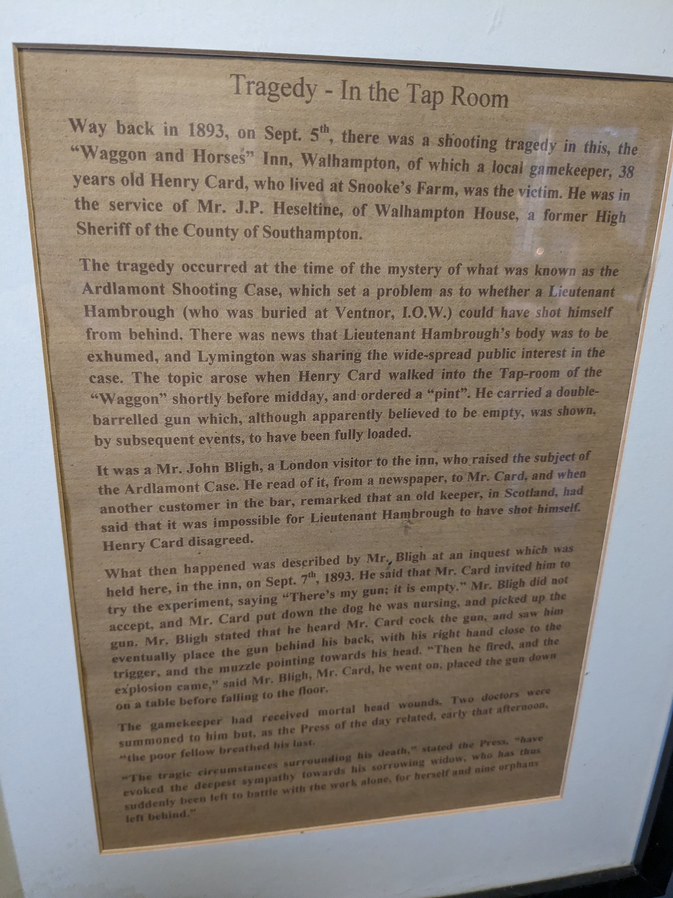

A Tragic Accident#
I discovered this tale from a sign in the entrance to what is now The Ferryman pub at Lymington, whilst killing time in advance of the last boat back to the Island.
Tragedy — In the Tap Room

Way back in 1893, on September 5th, there was a shooting tragedy in this, the “Waggon and Horses” Inn, Walhampton, of which a local gamekeeper, 38 years old Henry Card, who lived at Snooke’s farm, was the victim. He was in the service of Mr. J.P. Heseltine of Walhampton House, a former High Sheriff of the county of Southampton.
The tragedy occurred at the time of the mystery of what was known as the Ardlamont Shooting Case, which set a problem as to whether Lieutenant Hambrough, (who was buried at Ventnor, I. O. W.), could have shot himself from behind. There was news that Lieutenant Hambrough’s body was to be exhumed, and Lymington was sharing the widespread public interest in the case. The topic arose when Henry Card walked into the Tap-room of the “Waggon” shortly before midday and ordered a “pint”. He carried a double-barrelled gun which, although apparently believed to be empty, was shown by subsequent events to have been fully loaded.
It was a Mr. John Bligh, a London visitor to the inn, who raised the subject of the Adlamont case. He read of it, from a newspaper, to Mr. Card. And when another customer in the bar remarked that an old keeper in Scotland had said that it was impossible for Lieutenant Hambrough to have shot himself, Henry Card disagreed.
What then happened was described by Mr. Bligh at an inquest, which was held here, in the inn, on Sept. 7th, 1893. He said that Mr. Card invited him to try the experiment, saying, “There’s my gun; it is empty.” Mr. Bligh did not accept, and Mr. Card put down the dog he was nursing and picked up the gun. Mr. Bligh stated that he heard Mr. Card cock the gun and saw him eventually place the gun behind his back with his right hand close to the trigger and the muzzle pointing towards his head. “Then he fired and the explosion came”, said Mr. Bligh. Mr. Card, he went on, then put the gun down on the table before falling to the floor.
The game-keeper had received mortal head-wounds. Two doctors were summoned to him, but, as the Press of the day related, early that afternoon, “the poor fellow breathed his last.
“The tragic circumstances surrounding his death,” stated the Press, “have evoked the deepest sympathy towards his sorrowing widow, who has thus suddenly been left to battle with the work alone for herself and nine orphans left behind.”
The original story appeared in just a few short hours following the accident, before the gamekeeper succumbed to his injuries:
A Tragically shocking affair, Sheffield Evening Telegraph, Tuesday 05 September 1893
In Sheffield Evening Telegraph, Tuesday 05 September 1893, p3:
The Press Association’s Lymington correspondent telegraphs.— A tragically shocking affair occurred this morning at Wallhampton. Henry Card, a gamekeeper in the employ of Mr. J. W. Heseltine was talking with the landlord of the local public house, when the conversation turned upon the Ardlamont shooting mystery. Card insisted that it was possible that Mr. Hamborough’s injuries were self-inflicted, and in order to demonstrate this he took up his gun, placed it behind his back with one hand, and reaching down the other hand, pulled the trigger. The gun happened to be loaded, and Card blew the top of his skull off. He is not dead yet, but the doctors state that it will be impossible for him to recover.
But there was to be no recovery for the gamekeeper, and the next reports were of his death:
DEATH OF THE FOOLISH GAMEKEEPER, Sheffield Evening Telegraph, Wednesday 06 September 1893
In Sheffield Evening Telegraph, Wednesday 06 September 1893, p4:
DEATH OF THE FOOLISH GAMEKEEPER.
Henry Card, the gamekeeper who accidentally shot himself at Wallhampton, near Lymington, yesterday, while endeavouring to show how it was possible for Mr. Hambrough to have shot himself, has succumbed to his injuries. Card leaves widow and nine children.
Additional details that might help fill out a fuller telling of the story appeared in reports of the inquest:
TRAGIC AFFAIR AT LYMINGTON, Salisbury and Winchester Journal, Saturday 09 September 1893
In Salisbury and Winchester Journal, Saturday 09 September 1893, p2:
TRAGIC AFFAIR AT LYMINGTON.
Our Lymington correspondent writes:— A shocking affair occurred at the Wagon and Horses Inn, Walhampton, on Tuesday. A man named Henry Card, employed as gamekeeper at Walhampton Park, entered the taproom and ordered pint of beer. He was served, and whilst drinking it a conversation took place amongst the company present as to the probability of Lieut. Hambrough’s gunshot wound in the neck having been self-inflicted. A man said be was sure it was not, a statement Card contradicted, adding that he could easily demonstrate how it could be done. Handing his double-barrelled gun to one of the company, he said, “You try; it’s empty.” The man declined, and Card then took the gun, placed it behind his back, and tried in two or three different ways to get the muzzle against his neck. To the astonishment of all present, the gun suddenly exploded, the charge blowing off the top of Card’s head, leaving the brain protruding. Drs. Rendall and Hill were speedily in attendance, but there was no hope from the first, and Card died within two hours. He was 38 years of age, and leavea wife and nine children unprovided for. The tragic affair caused quite a consternation in the town.
The inquest was held on Thursday afternoon the Wagon and Horses Inn, Walhampton, before Mr. Bernard Harfield, county coroner. The evidence was to the following effect:— Dr. Rendall deposed that was called in immediately after the accident and found the deceased lying insensible on the floor of the inn, his face downwards, surrounded by pools of blood and scattered brains. On examining the head be found an irregular lacerated wound, about two inches in diameter, situated on the upper part of the back of the head, rather inclined to the right side. From this brain matter was exuding and hemorrrhage occurring. He did all he could, but Card eventually became comatosed and died two hours after receiving the injury. The wound was a gunshot wound. The man’s condition was hopeless from the first. —James Geary, living near, deposed to seeing the deceased just before he entered the public-house. Card had then opened his gun, apparently for the purpose of drawing the cartridges, but just at that time their attention was attracted to a crowd of persons crossing the railway bridge, and witness could not say whether deceased actually did remove the cartridges.— John Bligh, friend of the landlord of the Wagon and Horses, deposed to Card coming in and having pint of beer. A discussion took place relative to the Scotch shooting case, when deceased denied that it was impossible for Lieut. Hambrough’s wound have been self-inflicted. He asked Bligh to take up his gun and try, saying it was empty. Bligh not caring to do so, Card seized the gun, cocked the hammer, and after some difficulty in getting it in position behind his back, pulled trigger and exploded one barrel with fatal effect.— Other evidence was given, all showing that Card had been fully under the belief that his gun was empty.— A verdict of “Accidental death” was returned.
SHOCKING GUN ACCIDENT NEAR LYMINGTON, Hampshire Independent, Saturday 09 September 1893
In Hampshire Independent, Saturday 09 September 1893, p5:
SHOCKING GUN ACCIDENT NEAR LYMINGTON. INQUEST AT WALHAMPTON.
The County Coroner (Mr. B. Harfield) held an inquest on Thursday afternoon, at the Waggon and Horses, Walhampton, in connection with a tragic calamity that took place there at mid-day Tuesday, when Henry Card, aged 31, of Snook’s Farm, a gamekeeper in the employ of Mr. J. P. Heseltine, shot himself whilst attempting to show how Lieut. Hantheough might have done so. On assembling the jury inspected the low-roofed tap-room in which the tragedy occurred, the ceiling of which showed a cluster of shot-marks, and some hair where the charge had scattered after striking the deceased. From the inn they proceeded to deceased’s home, a secluded country homestead, about a mile off, to view the body. The inquest commenced sitting at quarter-past four, first witness called being Dr. Rendell, who deposed that he was on that side of the water about ten minutes to twelve, and was asked to go to the Waggon and Horses. On his arrival he entered the tap-room, and found the deceased lying INSENSIBLE ON THE FLOOR, lying on his left side with his face downwards. and surrounded by pools of blood and scattered brains. An examination of his head showed an irregular lacerated wound about two inches in diameter, situated at the upper part of the back of the head, rather inclined to the right side, from which brain matter was exuding and hemorrhage occurring. He did all he could for him by endeavouring to atop the haemorrhage by pressure, but he gradually became more insensible and eventually comatosed, and died about two hours afterwards ; he had no other marks of injury observable. In his opinion the wound was a gunshot one. He considered the case hopeless from the first.
James Geary, of Waterman’s Farm, stated that at about 11 o’clock on Tuesday morning, whilst he was working in the field the deceased spoke to him. They had a little conversation about his birds, when the deceased looked to the railway line and said “ What a lot people going down the line; I wonder what’s up.” At the same time he unlocked his gun, a breechloader, apparently, as I thought, to take the cartridges out, but, drawing my attention to the people going down the line, I did not take notice whether he took the cartridges out or not. A few minutes afterwards, deceased left him and went across the field in the direction the Lymington ferry. He noticed nothing unusual in his manner.
John Bligh, of London, staying at the Waggon and Horses, was told at about half past eleven that Mr. Card was in the house and he wanted a pint of beer, with which he supplied him ; another customer had a pint of beer, and after drawing that and a pint for himself he went into the tap-room and asked Mr. Card to drink. He said to deceased “ I see they have had rather a scene across in the Island, or at Ventnor.” He said “ Is that that gentleman that was shot in Scotland?” Witness fetched the paper, and read the article to him, some gentleman sitting in the room said that the old keeper in Scotland said it was impossible for Lieut. Hambrough to have shot himself as he was shot, Card replied
“OH YES HE COULD DO SO.”
He invited witness to try, saying “There is my gun, you can try it, it is empty.” Witness was sitting on a seat, and didn’t offer to get up. Card was nursing a little white dog at the time ; he instantly put the dog down, and took the gun up and cocked it. He then took it in his right hand, put it behind his back, with the muzzle towards the back of his head, and then fired. Witness iilustrated his explanation with the aid of the gun in question. He
SAW DECEASED PRESS THE TRIGGER,
and when the deed was done he put the gun down on to the table, and gradually sank down. The other hammer was at full cock. Witness called Mr. Gosling, the landlord, and asked where he could get a doctor, and was told across in the town, he called out to the ferryman to get his boat ready as quick as he could. He went into the town and summoned a doctor. When witness returned a doctor had arrived. Witness considered the shooting the result of an accident. Deceased seemed in his usual spirits. When deceased came into the tap-room, on putting down his gun, he stated to a boy that it was not loaded. Fitz Inman, of Wolverhamptan, knew the deceased well, and identified him after death. On Tuesday morning between half-past eleven and twelve witness was at the Waggon and Horses when Mr. Card came in. He was not in the tap-room at the time of the occurrence, being then on his way home to get a paper. He heard the report of a gun when he reached his door, and it appeared to come from the inn. He was called back to the house by the landlord. On opening the tap-room door he found deceased with his head resting on the settle. Witness took hold of him and eased him on to the floor. Witness took the pipe deceased was smoking out of his mouth. When witness left the room the gun was lying on the settle, he did not notice where it was on his return. He did not hear deceased say the gun was not loaded ; deceased was A VERY CAREFUL MAN with guns. The gun used was not deceased’s but had been used by him for some weeks. The only other man the room when witness left was Mr. Bligh, though he believed a man named Etheridge entered the room just after he felt. It was not considered necessary to call Etheridge, as he could not add materially to Mr. Bligh’s statement. The Coroner summed up briefly, and the jury returned a verdict of ACCIDENTAL DEATH. The deceased leaves a wife and nine young children.
Walhampton House had been acquired by Heseltine, a stockbroker, in 1883. Heseltine himself “was a stockbroker and senior partner in the family firm, Heseltine, Powell & Co.”, and “lived at 196 Queen’s Gate in South Kensington, London”, Walhampton House in Walhampton, Hampshire being his country home (Wikipedia). The family firm was founded in 1848 by Heseltine’s father and Charles W. Marten in 1848 as Marten & Heseltine” and “dealt particularly in American railroad bonds and shares”. Heseltine was “a collector of oil paintings, drawings and watercolours of the English and Continental schools” and “was a trustee of the National Gallery and advised on the purchase of paintings from 1893 until his death in 1929”.
It seems that Heseltine was not a stranger to unfortunate accidents. His daughter, Dorothy Heseltine, married Lionel Sackville, Viscount Cantelupe, in 1890, only for him to die in a boating accident a few months after their marriage:
LORD CANTELUPE DROWNED, Ripon Observer, Thursday 13 November 1890
In Ripon Observer, Thursday 13 November 1890, p6:
LORD CANTELUPE DROWNED.
Lord Cantelupe has been drowned in Belfast Lough. It seems that at the height of the storm, on Thursday night, the yawl Urania, having on board Viscount Cantelupe, eldest son of Earl Delawarr, was driven ashore. The disaster occurred within a stone’s throw of a terrace of houses at the foot of the main street of the village of Bangor. The night was one of the wildest ever remembered in the district. The Urania anchored about 300 yards from the shore on Thursday evening, having arrived during the day from Glasgow, where Lord Cantelupe recently purchased the vessel. As the gale increased in violence,and the sea constantly broke over the Urania, considerable anxiety was felt on shore for the safety of the yawl. At two o’clock yesterday morning signals of distress were sent up from the Urania, and it became evident that she was drifting fast upon the Saltpan Rock. The sea ran so high, the wind was blowing with such terrific force, and the night was so dark, that to launch a boat at that moment would have been reckless folly. The Urania therefore drifted with no hope of assistance from the shore, and finally, about ten minutes past two, struck upon the rocks. Her keel seemed to have struck in a rocky cleft, and in that perilous position she remained for about two hours with the FURIOUS WAVES BREAKING CLEAN OVER HER. It was impossible for any living soul to remain upon the yacht’s storm-swept deck, and Lord Cantelupe and his seamen decided to take to the rigging, in which position they would be clear of the waves, although exposed to the furious biting cold wind. The yacht, too, was beginning to till, and it was evident that no time was to be lost. Lord Cantelupe went first, but just as he had reached the top step and was stooping down with a buoy on the arm which clasped the rigging, and the other hand extended to help the next man, a tremendous sea struck the little craft, and the unfortunate young nobleman, who at that moment was cheerily encouraging his men, was SWEPT HEADLONG INTO THE BOILING SURF, and was never seen again. After a few ineffectual attempts the life-line was caught by one of the yacht’s crew, and the exhausted storm-beaten seamen were safely hauled ashore after theee hours of very hard work. The body of Lord Cantelupe has not yet been recovered. The young nobleman’s untimely end has aroused the greatest sympathy, not only on his own account, but on that of his young wife, to whom he was married only last June. The members of the crew are deeply grieved at the fate of the young nobleman, who during the short time that he was on board had shown a most affable and kindly disposition. Captain Buzzard states that his lordship had hold of a lifebuoy, but just before he was swept overboard he dropped it, probably because his limbs had become numbed by the cold.
Viscountess Cantelupe is at present staying with her mother at Wallhampton Park, Lymington. The deceased was only 24 years of age.
But that’s all by the by…
Returning to the tragic case of Henry Card, and the behaviour he was trying to recreate: what was the Ardlamont Shooting Case, aka the Ardlamont Mystery, or the Monson Case?